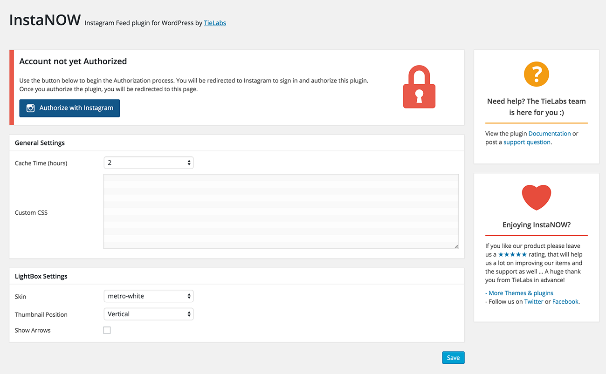

InstaNOW - Instagram Feed plugin for WordPress
User-friendly Plugin for displaying clean, customizable, and responsive user or hashtag Instagram feeds on your website.
User-friendly Plugin for displaying clean, customizable, and responsive user or hashtag Instagram feeds on your website.
Check These Links For How to Install InstaNOW Plugin .
From InstaNOW settings page you can authorize your Instagram account, set the Cache time and add Custom CSS Codes.
To Display "InstaNOW User Feed" in your sidebar
To Display "InstaNOW" in a post or a page
 icon
icon